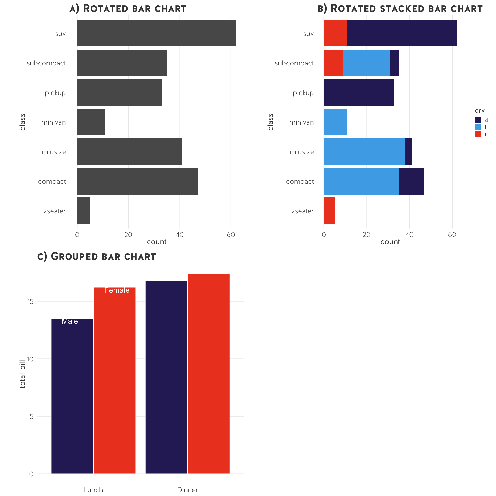
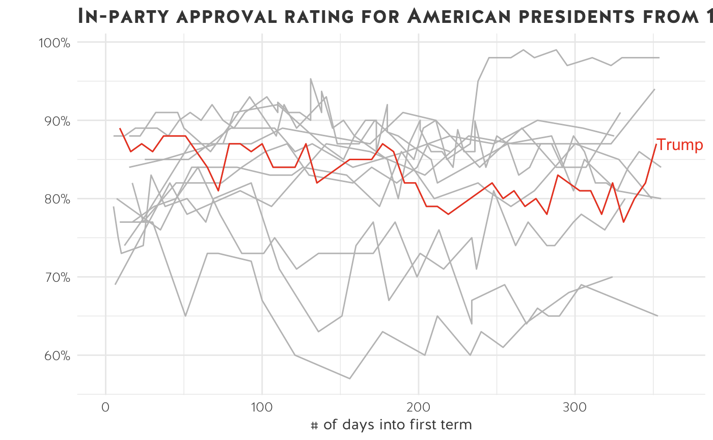
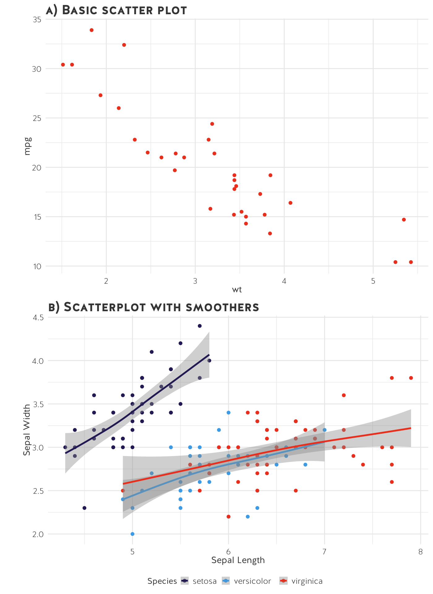

USSC data visualisation style guide
Zoe Meers & Simon Jackman
2019-10-14
Source:vignettes/ussc_styleguide.Rmd
ussc_styleguide.RmdData visualisation can be a fantastic method for communicating quantitative results. Compelling and effective graphs are clean, clear, and emphasise data rather than “empty” graphic design. As Edward Tufte (one of the pioneers of data visualisation) wrote, “Confusion and clutter are failures of design, not attributes of information” (Tufte, Goeler, and Benson 1990, 53). Good graphs place data at the forefront.
This is a guide for visualising data effectively in a style consistent with the Centre’s colours and fonts. It covers common visualisation errors and demonstrates what should be done instead. The suggestions reflect data visualisation best practices and help provide a uniform look for the Centre’s data visualisation.
USSC data visualisation
A standard USSC graph (for R users, theme_ussc(). If you use R, feel free to check out the ussc ggplot2 guide.) has the following elements:
| USSC data visualisation manual | |||||
|---|---|---|---|---|---|
| Font | Fontface | Size | Colour | Notes | |
| Title | Halis GR | Bold | 14 | #444444 | The title should be pithy and SEO-friendly. Titles should explain the content within the graph, not solely describe the axis labels. |
| Subtitle | Halis GR | Regular | 11 | #444444 | Use a subtitle if you need to expand or add clarification to your title. |
| Grid lines | NA | NA | Major grid line- 0.5pt Minor grid line - 0.25 | #EBEBEB | Remove grid lines unless necessary. |
| X and Y axis titles | Halis GR | Bold | 11 | #444444 | X axis labels should be horizontal and Y axis labels should be vertical. Remove from the graph if the axis is obvious (i.e. year). |
| X and Y axis labels | Halis GR | Regular | 12 | #444444 | Labels should always be horizontal. Include units and punctuation (i.e. break large numbers with commas). To save space, consider adding a unit only for the first observation. |
| Axis ticks | NA | NA | NA | #D3D3D3 | NA |
| Legend title | Halis GR | Bold | 11 | #444444 | NA |
| Key labels | Halis GR | Regular | 12 | #444444 | Key labels should always be horizontal. |
| Annotations | Halis GR | Regular | 11 | #444444 | NA |
| Caption (source and notes) | Halis GR | Regular | 10 | #444444 | NA |
| Small multiple labels | Halis GR | Bold | 10 | #444444 | NA |
And they look like this:

The main content well for the Centre’s website is 780 pixels (px) wide, which translates to 8.125 inches (in) or 20.636 centimetres (cm). When saving a publication-ready graph, set the width to 7 inches. Most graphs fit in this div. For wide graphs that spans the entire width of the webpage, set the width as 1320 px (13.75 in or 34.925 cm). If the graphs are web-based, the height can vary. Always set the dpi to 300.
To avoid compression issues that lead to fuzzy fonts and lines, set the width to be slightly less than the allowed maximum (i.e. 1300 px instead of 1320 px, or 34 cm instead of 35 cm). Play around with different file types (i.e. SVG or PDF instead of PNG). Avoid JPEG files - they automatically compress the metadata and do not scale when resized. As a last resort, consider removing titles and captions from the file and adding them into the website manually.
If you are an R user, note that quartz (as well as ggsave, grid, etc.) automatically save graphs as a 7x7 image with a 300 dpi.
USSC colour schemes
In statistical graphics, there are three colour palettes: qualitative, sequential and diverging. The first is used for coding categorical information and the latter two are for numerical or ordinal variables.
Diverging palettes are often used to emphasize the midpoint. The midpoint must be “significant” or worthy of highlighting (usually zero or the median value).
In the USSC colour schemes, there are two sequential palettes: blue and greyscale. Sequential palettes visualise continually increasing or decreasing variables, where light colours are at the lower end of the number scale with the darker shades representing the larger numerical values. There is a categorical scale up top for qualitative (or discrete) data. The remainder are diverging scales.
If you have categorical data with more than 6 categories, collapse them! The greater the number of categories, the harder they are to compare. For whatever reason, you might not be able to do this - in this case, try reading the small multiples section.
Note: if you are comparing the United States and Australia, please use USSC orange for US data and USSC light blue for Australia data.
General data visualisation tips
Ensure figures, tables and other visualisations are self-explanatory: Some readers turn their attention to graphical elements before they read the entire text, so these items should be self-contained.
Refer, but don’t repeat: Use the text to draw the reader’s attention to the significance and key points of the table/figure, but don’t repeat details.
Be consistent: Ensure consistency between values or details in a table (e.g., abbreviations, group names, treatment names) and those in the text.
Give clear, informative titles: Table and figure titles should not be vague but should concisely describe the purpose or contents of the table/figure and should ideally draw the reader’s attention to what you want him/her to notice. Also ensure that column heads, axis labels, figure labels, etc., are clearly and appropriately labelled. Titles and captions should be SEO-friendly.
Erase non-data ink, within reason.
- Remove grid lines
- Remove axis
- Remove colour
Avoid plotting graphs with a dual y-axis. Humans naturally draw their eyes to the difference between the two lines, even when there is no comparison to be made. This is especially egregious when a “smaller” value \(>\) “larger” value because they’re on different scales. More on this from the team at datawrapper, as well as a few pieces from notable statisticians and social scientists. Here’s an academic study detailing why dual y-axis are not ideal.
People use graphs to distort data in misleading ways. Because many lack visualisation literacy, this is, quite frankly, a good tactic if you want to convince someone that you are right! Data, statistics, and graphs all add credence your argument and many are reluctant to critique quantitative evidence because they simply don’t know how to fault statistical analyses. Moreover, it is entirely rational to assume that the author is more knowledgeable about the data given that they made the graph.
Another contributing factor to misleading graphs is the innumeracy of data viz creators themselves. The increasing accessibility of tools like Excel, graphic design programs, and other data viz packages lead anyone to think they can create a graph. However, many lack basic statistical skills, leading to obvious quantitative mistakes. Edward Tufte and others in the visualisation space have written extensively on this topic. Indeed, Tufte wrote, “Lurking behind the inept graphic is a lack of judgement about quantitative evidence. … Illustrators too often see their work as an exclusively artistic entreprise. … Those who get ahead are those who beautify data, never mind statistical integrity.” (1983, p79). However, bad graphs are not entirely the fault of graphic designers. There are plenty of examples of truly awful graphs published in relatively reputable sources such as the Harvard Business Review (i.e. this 2x2 matrix). But as staff and researchers at USSC, we should hold ourselves to a higher standard and check the statistical validaty of our data and resulting analyses. Keep in mind that if our results appear too good to be true, they probably are!
{kind=link}
For more information on misleading graphs, Nathan Yau (a prolific data visualiser) wrote about spotting visulisation lies. Michael Correll, a research scientist at Tableau, and Jeffrey Heer, a professor of data visualisation and human computer interaction, recently wrote a piece differentiating between malicious misleading visualisations and just plain incorrect visualisations here.
How do people distort data?
Dual y-axis - see above.
Truncating y-axis on bar charts.
Superfluous 3D charts, especially 3D pie charts.
No scale on axis.
Misleading scales on axis.
Deliberately omitting data.
Using percentages to hide the fact that you have a tiny sample size.
Improper scaled pictograms.
Pie charts: thin slices may be difficult to interpret, people have trouble understanding angles, bar charts are usually better for displaying proportions.
Different colours for identical categories throughout a document - this is especially true when creating small multiples but also exists in other cases. If you compare the US and Australia, keep the colours for both countries consistent throughout for each graph.
In The Visual Display of Quantitative Information, Edward Tufte devotes a whole chapter to the idea of graphical integrity. He writes, “The main defense of the lying graphic is … ‘Well, at least it was approximately correct, we were just trying to show the general direction of change.’ … A second defense of the lying graphic is that although the design itself lies, the actual numbers are printed on the graphic for those picky folks who want to know the correct size of the effects displayed. … Few writers would work under such a modest standard of integrity, and graphic designers should not either.” (Tufte and Graves-Morris 1983, p76-77, emphasis our own.) To ensure graphical integrity, work with the data. Label your graphs. Make sure you are representing what you want to represent and that it is statistically correct. Prioritise the data and not graphic design.
For example …


Sort your data in a logical (ascending, descending) order before plotting.
Avoid printing large numbers in the millions, billions, or trillions. Concatenate where possible, $300,000 becomes $300K and so on.
Really think about colour. We use colour to differentiate between groups or layers. If all bars measure the same variable, use the same colour. If you want to highlight one group – colour that specific bar a bright colour, leaving all others grey.

- Colour acts as a superb highlighter against a black and white plot. Avoid large areas of fully-saturated colours (Tufte, Goeler, and Benson 1990).
The colours in a statistical graphic should cooperate with each other. The typical purpose of colour in a statistical graphic is to distinguish between different areas or symbols in the plot — to distinguish between different groups or between different levels of a variable. This means that there will typically be several colours, or a palette of colours, used within a plot and that those colours should be related to each other. (Zeileis, Hornik, and Murrell 2009, 2)
- Direct annotations are always preferable to legends.


Direct labels are easier to understand and read. This is really important from an accessibility standpoint. People who are colour-impaired might struggle to match a legend key to a specific point on the graph.
If you have direct annotations, remove extraneous information. Do not keep axis text, ticks, or lines unless necessary.

- The dark grid lines overwhelm the data - what we want to highlight!
- The y-axis text is also unnecessary.
Remember to remove the y-axis line when you remove the text. Lines add information when we can quantify the distance… Otherwise, they just take up space.
- A quick note on vertical x-axis: they are cramped, difficult to read and should be avoided.
- First, increase the width of the chart so that the labels fit horizontally.
- Second, concatenate the labels (i.e instead of 2012, ’12 works just fine).
- Third, consider whether you need all of the labels. For example, if you’re plotting election results, you do not need to plot every single year along the x-axis – simply plot election years. Likewise, if you’re plotting other time series data, you do not need to label each year along the axis.
- Finally, if these options do not work and you’re looking for more space, flip the chart so that the y-axis is where the x-axis used to be and vice-versa.
- Avoid plotting x-axis labels on an angle.
Bar charts
- Bar charts compare numerical variables for one (categorical or continuous) observation.
- They can be used to stack one numerical variable into sub-groups (i.e. a stacked bar chart or a proportional bar chart).
- Bar charts can be grouped together.

- Bar charts are descriptive.
- The y-axis should nearly always start at 0.
Histograms
- Histograms are similar to bar charts.
- They visualise a count of all observations in each bin.

Line charts
- Line charts are often used with time-series data; they show the trend in a variable.
- You can plot more than one variable with multiple lines (if they are on the same scale).
- You can also show the same variable for multiple observations with multiple lines.
- The y-axis should nearly always start at 0.

Small multiples
Sometimes we plot too much information on one chart.

- We have plotted the in-party approval rating for 12 US presidents in their first year in office. It is impossible to see the data clearly - this is the perfect example of a spaghetti chart.
- Note: time series data begin to look incomprehensible when you have more than ~5 lines on one graph.
- There are ways to fix spaghetti charts. Maybe we’re only interested in President Trump. We can selectively highlight Trump’s in-party approval rating.

What if, instead of emphasising President Trump, we want to compare all presidents from 1956 onwards? We can split the data into several small charts.
Let’s try small multiples:

Small multiples are a great way to show differences in a data set without overplotting and obscuring information.
Let’s overlay Trump’s in-party approval rating on top of the other 11 presidents:

Scatter plots
Scatter plots graph the relationship between two continuous variables (i.e. are they associated with each other?).
In general, the x-axis is the independent variable and the y-axis is the dependent variable. In other words, an increase in X (i.e. time) contributes to an increase or decrease in Y (i.e. weight of a newborn baby).

Maps
Should you use a map to display your data?
Choropleth maps are often seen as problematic because geographic areas and population vary in size, so maps might mislead the viewer. Yet, people love choropleth maps. (They are pretty!) Remember to ask yourself whether you’re plotting the effect of said variable or if you’re just plotting the population density.
For more info on the suitability of maps for your data, read Kieran Healey’s explainer.
Tip: normalise your data before plotting.

Pie charts
When should you use a pie chart? According to experts, almost never.
A final note from Edward Tufte:
A table is nearly always better than a dumb pie chart; the only worse design than a pie chart is several of them, for then the viewer is asked to compare quantities located in spatial disarray both within and between pies. (Tufte and Graves-Morris 1983, 178).
References
Tufte, Edward, and P Graves-Morris. 1983. The Visual Display of Quantitative Information.
Tufte, Edward R, Nora Hillman Goeler, and Richard Benson. 1990. Envisioning Information. Graphics press Cheshire, CT.
Zeileis, Achim, Kurt Hornik, and Paul Murrell. 2009. “Escaping Rgbland: Selecting Colors for Statistical Graphics.” Computational Statistics & Data Analysis 53 (9). Elsevier: 3259–70.